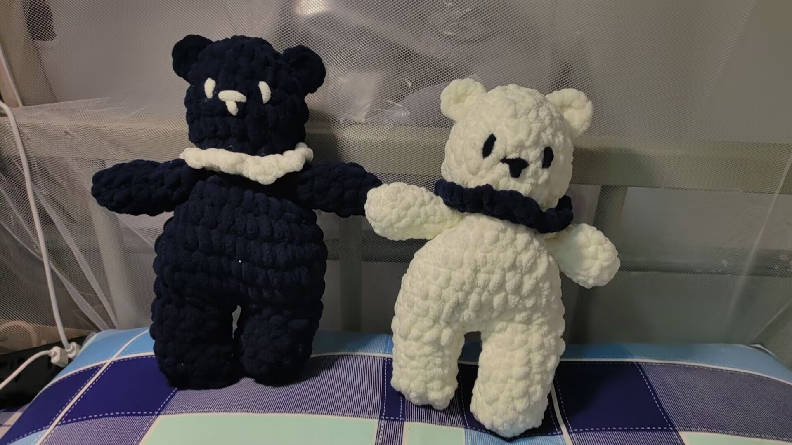
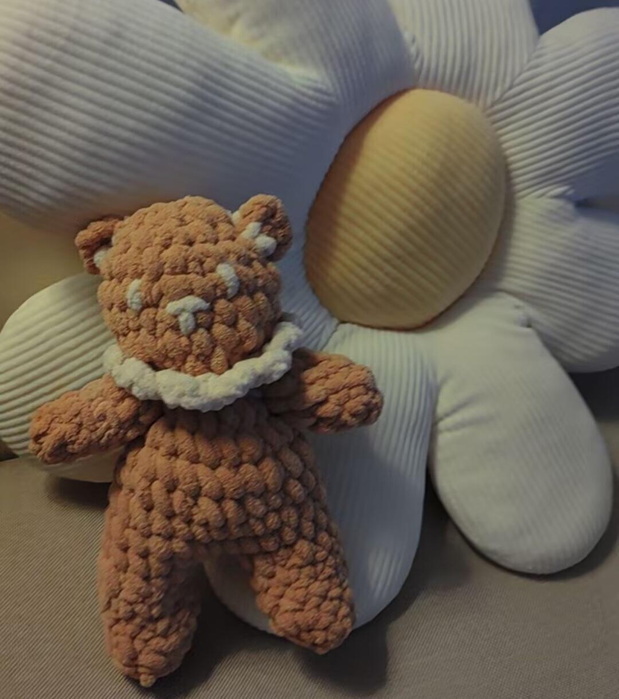

1.这是我第一次接触钩织的时候织的三只小熊，前两只作为我和男友的信物，最后一只送给妈妈了。
起针是最难的部分，其次是要仔细看好针眼，数好个数，不然一圈下来很可能加针或漏针。最让人生气的是这家店总是少给毛线！
我的手工作品
1.这是我第一次接触钩织的时候织的三只小熊，前两只作为我和男友的信物，最后一只送给妈妈了。
起针是最难的部分，其次是要仔细看好针眼，数好个数，不然一圈下来很可能加针或漏针。最让人生气的是这家店总是少给毛线！
2.积木拼的小动物们，真的好可爱呀，猫猫的头是可以动的哦。
我打算把这一套积木买个遍，拼一个动物大世界！最棒的设计是很多款式可以两拼，拼完一种，过段时间可以再试试第二种，超值体验！
3.这是我用扭扭棒做的玄猫和博美，加上一些迷你小配饰，简直萌出天际！
左边那只玄猫模仿的是我男朋友家那只哦，超级像（详情见小动物鉴赏第5条）所以就送给他拿回去给豆豆玩。
4.这是我第一次接触3D建模的时候做的作品，我给它起名叫超级邪恶南瓜灯。非常简陋，但过程中十分快乐。
这怎么不算我的手工作品嘞。其实我还做过一个兔斯基，但是怎么看怎么丑。还没来得及改，文件就丢失了。这项技术真的非常考验我的美术功底和空间感。
5.这是我在济南家的阳台上堆的雪人，那是2024年末寒假的一个晚上，济南章丘下了很大的雪。
家里人让我帮忙清理阳台的雪。我就想用多余的雪堆雪人，结果刚堆完雪又下大了，根本来不及扫。我很累，于是直接躺在雪堆里，看着白色的雪花从天空飘落，像是凭空出现在眼前。那是一个安静美好的夜晚。
6.这两个都是我用纸折的手工作品，非常小巧。左边是迷你花束，包住花朵的纸是我大一的英语卷子。我发现包装纸上写的什么并不重要，只要是外文，乍一看看不懂，那就非常有高级感。
右边是迷你秘制小汉堡，上面的“白芝麻”是我完美到不放过细节的体现。由于过于小巧精致，我现在已经找不到它滚落到哪里去了。
7.这是我后来尝试钩织的结果，一只蓝猫。由于时间过去了太久，而且这次选的线太细了，钩织技术退步巨大，成果有点抽象，尾巴朝天飞，妈妈说以为是只老鼠。
这只小猫的身子其实整个都歪了，下面的四条腿位置其实非常扭曲（照片目前看不出来）。但是我认为，可以不拘小节，但是细节决定成败。于是我给它专门缝了一个X形粉色屁眼。